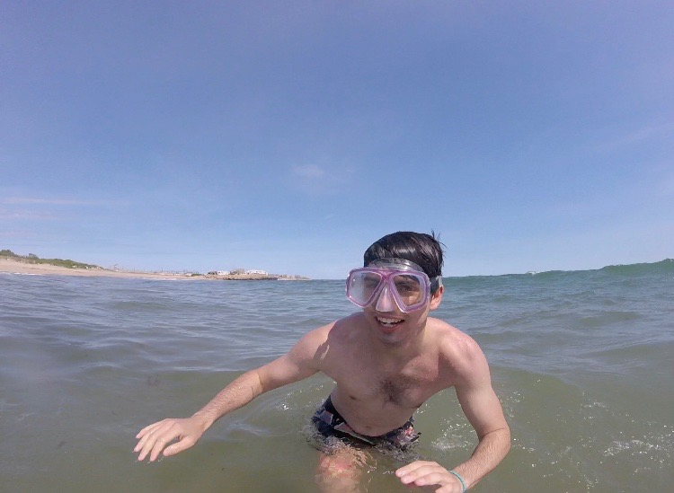

|

|

|

|
|---|
About Me


Welcome, friend! My name is Andrew King, but a lot of people call me Andy; I don't really have a preference. I'm a senior (in my fifth year) at URI, and I'm taking CSC 106 because it's out of my comfort zone and because computer science seems both interesting and useful. I think I'm probably less technologically inclined than the average 22 year old, though I do enjoy puzzles, and I've been tinkering around with Python for a few months now. That's me!